Performance pour dôme · violon, plantes vivantes et voûte · 45 minutes, cinq pièces · Jérôme Li-Thiao-Té (J3ZZ), La Réunion
Au centre de la Satosphère, je joue du violon entre trois fougères arborescentes reconstruites : des tours de truss couronnées de fougères vivantes, dont l'activité électrique devient, en temps réel, son et image. Le public se tient parmi elles : chaque plante a sa voix, qui naît au pied de sa tour et monte jusqu'à la coupole.
Dossier d'appui de la candidature à la résidence de production d'œuvres pour dôme de la SAT, 2027-2028.
Maquette 3D de l'implantation → Écouter les cinq pièces → Présentation du projet (PDF, 16 pages) → Portfolio (PDF) →Racines & Résonances est une performance audiovisuelle immersive de 45 minutes, en cinq pièces, pour violon, plantes vivantes et dôme. Au centre de la Satosphère, je joue du violon au milieu de trois fougères arborescentes reconstruites : trois tours de truss en aluminium brut, hautes d'environ 3 m, portent chacune à leur sommet une couronne de fougères vivantes trouvées sur place. La fougère arborescente de la forêt primitive de La Réunion ne voyage pas ; j'en reconstruis la forme, une couronne de frondes sur un tronc, avec un tronc technologique et une couronne vivante. Ce tronc n'est pas un simple support, il met le récit en scène : la technologie porte le vivant, et dans la quatrième pièce elle menace de l'écraser. Des capteurs bioélectriques que j'ai conçus et construits moi-même lisent les variations de potentiel électrique de chaque plante ; je les transforme en temps réel en son et en image. Ce signal n'est pas un langage, et je ne le présente pas comme tel : c'est une matière vivante, lente et imprévisible, avec laquelle j'improvise sans qu'aucune des deux voix, la mienne ou celle des plantes, ne pilote l'autre.
Le public, debout et libre de circuler, se tient entre les plantes et l'interprète, sous la voûte. Chaque plante a sa voix : elle naît au pied de sa tour, monte le long du tronc jusqu'à la couronne, puis dans la coupole, et passe d'une plante à l'autre ; au-dessus de chacune pousse sa propre zone d'image générative, comme une canopée vue d'en dessous.
Le récit est au cœur de la pièce. Les cinq pièces racontent la relation entre nature, technologie et société : le doute face au sacré, une première rencontre avec la technologie, un retour réconfortant à la nature, l'irruption d'une masse technologique impossible à arrêter, puis une résolution rituelle où ces trois forces se rejoignent dans une même transe collective, en spirale. Chacun y tient un rôle : le public incarne la société comme masse critique, les technologies du dôme la technologie elle-même, les plantes l'environnement ; et moi, facilitateur ou narrateur, dans une position proche du chaman, j'introduis ces questions sans les trancher, pour amener chacun à une décision consciente sur sa propre relation entre technologie et nature.
Le titre se lit littéralement dans la matière. Les racines sont celles des plantes captées et les miennes, réunionnaises : maloya, percussions d'inspiration indienne, chants inspirés des traditions asiatiques présentes sur l'île. La résonance est à la fois acoustique (la spatialisation même du dôme) et historique : celle de l'ère industrielle, du sacré et des mémoires de l'esclavage, qui traverse la pièce jusqu'à sa résolution finale.
La pièce est présentée depuis 2019 (Hongrie, La Réunion, Maurice, France) en plusieurs configurations (salle en quadriphonie, plein air avec laser, amphithéâtre), parfois accompagnée d'ateliers intergénérationnels avec des scientifiques ; toujours dans un dispositif frontal, machines visibles, face à un public assis. La version dôme renverse ce rapport : un instrumentarium réduit (le violon et ses pédales d'effets et de boucles, un échantillonneur Torso S-4 et un synthétiseur Polyend), une présence d'interprète plus proche du théâtre physique que de la régie, et un public qui n'est plus face à la pièce mais à l'intérieur. Elle prolonge aussi le langage visuel cyanotype/lumen et blob tracking déjà projeté sur la façade de la Villa de la Région (La Réunion), où le réseau capté interrogeait la surveillance et le partage de données à notre insu.
Après la résidence, la pièce pourra tourner dans d'autres dômes avec une fiche technique légère (truss standard loué sur place, fougères de jardinerie) et donner lieu à une version film fulldome tirée de la captation de résidence.
Sur une scène frontale, mes plantes restent des images derrière moi : le public regarde la représentation d'un phénomène. Le dôme permet ce qu'aucun autre lieu ne permet : se tenir à l'intérieur de ce phénomène. Trois raisons concrètes.
Chaque plante a une voix à deux étages : un petit haut-parleur posé au pied de sa tour (ses racines), qui la fait entendre depuis sa position réelle dans la salle, et la même voix prolongée sur la voûte au-dessus d'elle par les haut-parleurs du dôme (sa canopée). Dans SpatGRIS, les deux forment une seule source, que je compose entre le sol et le zénith ; son image générative suit le même chemin. Le tronc de truss rend ce trajet visible : on voit la voix monter du pied à la couronne avant de l'entendre s'ouvrir dans la coupole. Le public peut s'approcher d'une plante, l'entendre à hauteur d'homme, puis lever les yeux et la suivre jusqu'au zénith. Aucune scène frontale ne permet ce passage.
Le son n'est pas un mix diffusé dans le dôme : l'espace est un paramètre de composition, avec son propre vocabulaire, au service du récit, pièce par pièce (détail dans Composition spatiale du son et dans chacune des cinq pièces). Cette écriture est composée et rendue à l'avance sur une seule ligne de temps de 45 minutes, synchronisée avec l'image, puis affinée sous le dôme : la matière du spectacle et des enregistrements de violon en sources séparées. En direct, deux voix vivantes s'y inscrivent : mon jeu au centre, le violon en trois sorties séparées (son sec, effets en stéréo, boucleur en stéréo), plus un échantillonneur Torso S-4 et un synthétiseur Polyend en stéréo, tous à des places fixes ; et les voix des plantes, générées en temps réel par leur signal, dont le trajet entre racines et canopée, préparé pièce par pièce, se module selon leur activité. Le cadre est écrit, ce qui y vit ne l'est pas.
L'activité électrique d'une plante est invisible et minuscule ; le dôme la rend monumentale. Les visuels ne sont pas des textures plates projetées sur la voûte, mais des structures génératives en volume (croissances minérales, réseaux, nuées, racines) qui semblent pousser dans la salle, entre les plantes, l'interprète et le sommet. Au-dessus des trois couronnes vivantes, la voûte prolonge une canopée de fougères arborescentes générée, vue d'en dessous : la forêt primitive de La Réunion, absente de la salle, réapparaît au-dessus du public. Les images restent sombres et lentes : sur le dôme, un petit mouvement devient immense.
La forme du dôme rejoint enfin le geste final. La dernière pièce construit une transe en spirale, comme la crosse d'une jeune fronde de fougère qui se déroule, ou la danse des derviches tourneurs : la voûte circulaire n'est pas un cadre pratique, mais l'aboutissement vers lequel tend toute la performance, en son comme en image.
Le dôme change aussi ma méthode : je ne compose plus un mix pour un public placé face à moi, mais un espace où chaque voix, la mienne comme celles des plantes, a une place, une direction et une hauteur, et où chacun choisit où se tenir et vers qui se tourner.
Dans la Satosphère, le son n'est pas un mix diffusé : l'espace est un paramètre de composition, au même titre que la hauteur ou le rythme, et il porte le récit autant que l'image. Chaque pièce a sa propre écriture spatiale, conçue avec le récit et l'image, préparée à distance dans SpatGRIS (écoute binaurale), puis ajustée sur les 93 haut-parleurs et les 5 caissons du dôme.
Les pièces 1 à 3 restent intérieures : peu de sources, proches, au ras du sol ou suspendues, autour de l'interprète et des plantes. La pièce 4 bascule vers l'extérieur et le collectif : une masse arrive de l'horizon et encercle le public. La pièce 5 rassemble tout dans une spirale qui monte du sol au zénith, puis se dissout ; il ne reste que les voix des plantes, à leur pied. La pièce se termine là où elle a commencé : au ras du vivant.
L'espace est composé et rendu à l'avance, pièce par pièce, sur une seule ligne de temps de 45 minutes synchronisée avec l'image composée, puis affiné sous le dôme. En direct, deux voix vivantes s'y inscrivent : mon jeu au centre, le violon en trois sorties séparées (son sec, effets en stéréo, boucleur en stéréo), plus un échantillonneur Torso S-4 et un synthétiseur Polyend en stéréo, à des places fixes, et les voix des plantes, générées en temps réel par leur signal. Son et image composés suivent une seule ligne de temps de 45 minutes, synchronisée (ossia score) ; j'improvise par-dessus. Le son et l'image d'une même source bougent ensemble : là où une voix se trouve, son image générative pousse.
Esquisses : vues fisheye de la voûte (centre = zénith), non définitives. Écoute : version actuelle, en stéréo — la matière de départ, qui sera recomposée pour le dôme, et non le rendu spatial final. Ensemble du disque : SoundCloud.
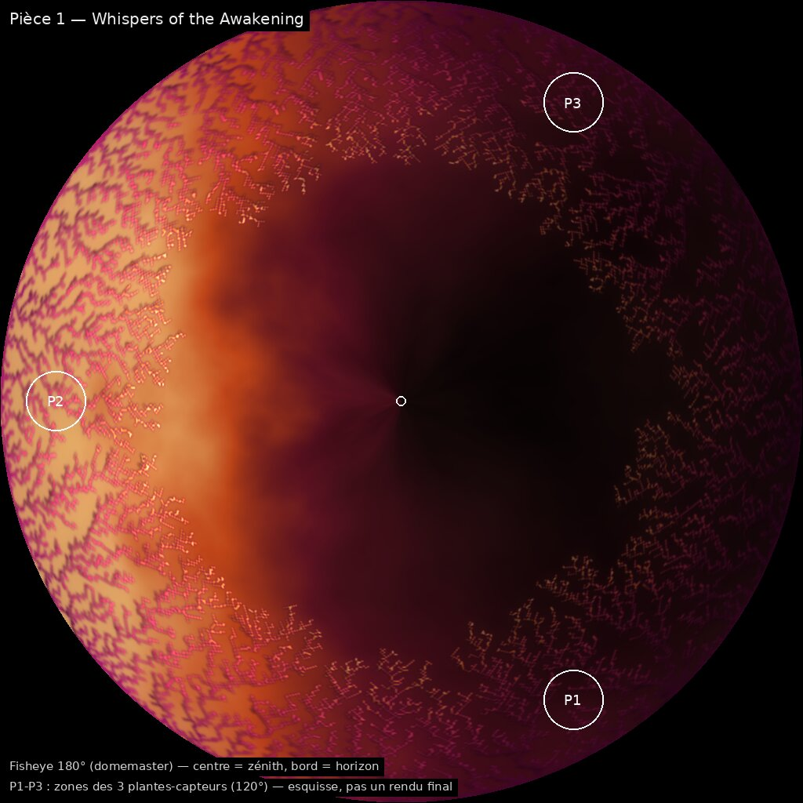
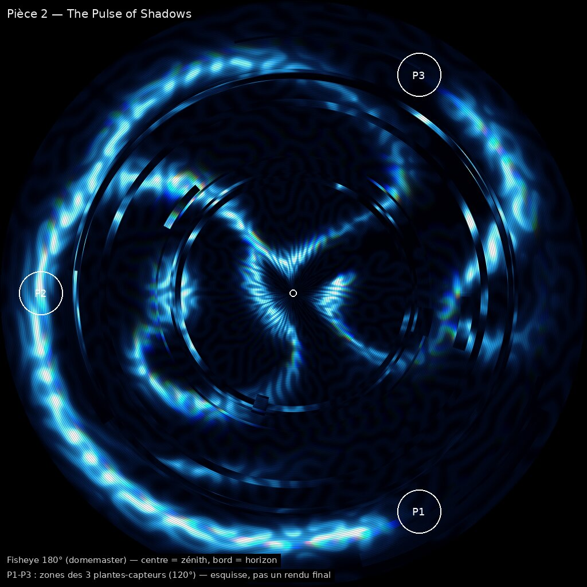
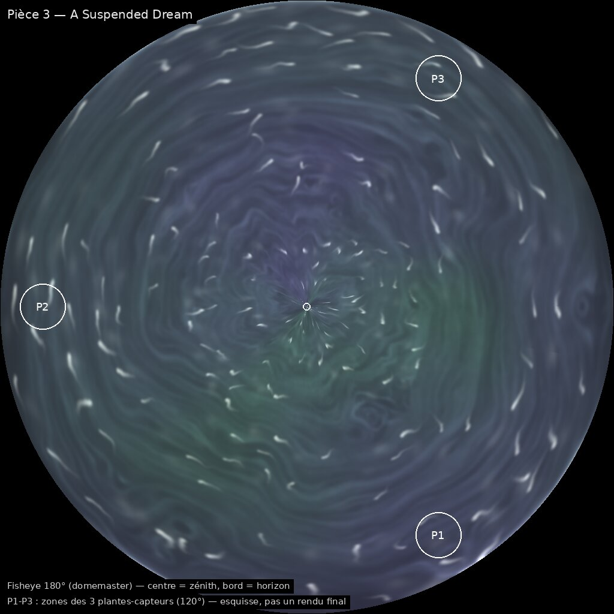
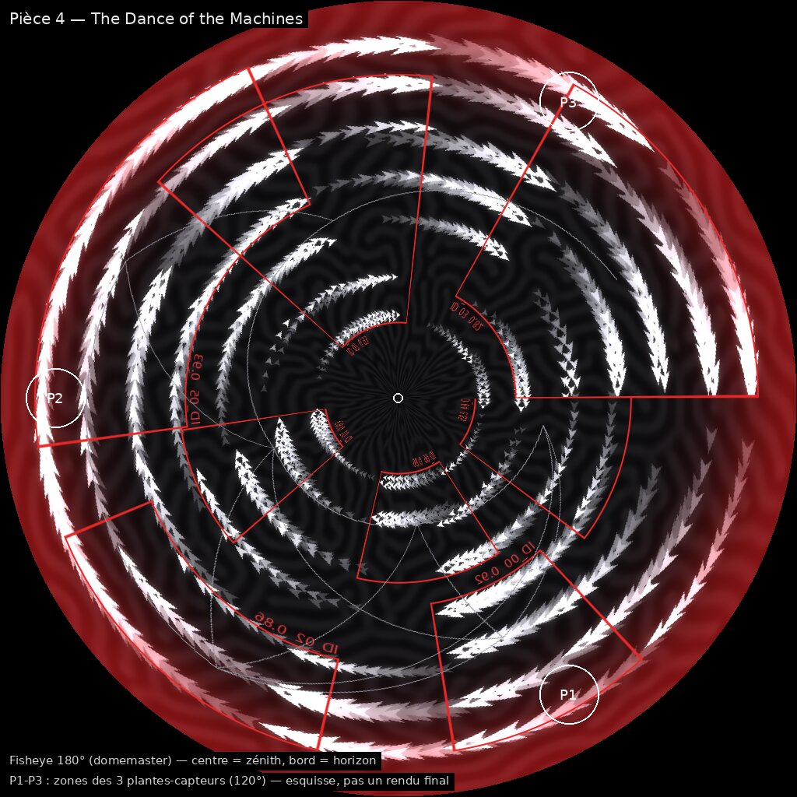
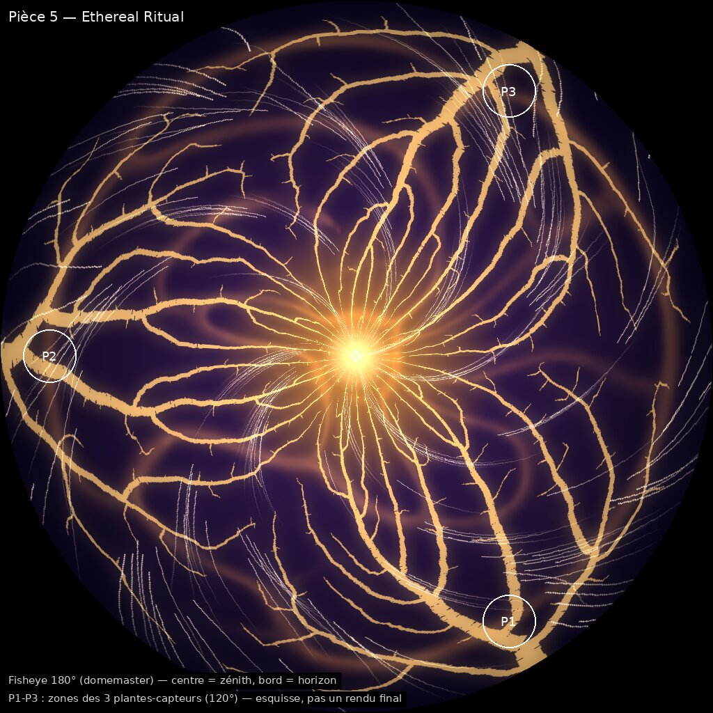
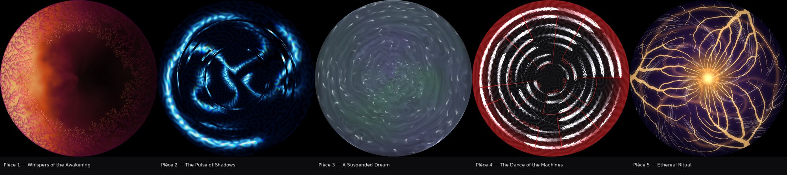
Les cinq esquisses existent aussi au format de la Satosphère (fisheye 210°, 4096 × 4096) : télécharger les cinq images (zip), ou une à une : 1 · 2 · 3 · 4 · 5. Puis ouvrir domeport.sat.qc.ca, choisir « Open folder » et sélectionner le dossier décompressé : les images sont prêtes pour les réglages par défaut (« Sato 210 », FOV 80), rien à changer. La vue démarre face à l'avant du dôme ; tourner la tête avec la souris ou le clavier pour parcourir la voûte et lever les yeux vers le zénith.
Les vidéos fisheye sont dans le dossier Google Drive DOMEPORT-MATERIALS : un premier brouillon audioréactif de la pièce 1, et les cinq esquisses animées en fondu. Pour les voir dans le dôme virtuel : télécharger la vidéo, puis sur domeport.sat.qc.ca l'ouvrir avec le bouton de choix de fichier (« Choose File » / « Choisir un fichier »), réglage « Sato 210 » par défaut. Autre voie, sans téléchargement : menu « Google Drive » de Domeport, coller le lien du dossier, « Open folder », puis « Connect to Google Drive » (connexion Google demandée). Tous les fichiers lourds de la candidature sont dans le dossier Google Drive du projet.
Maquette 3D interactive : estrade au centre, triangle de trois tours de truss couronnées de fougères, petit haut-parleur au pied de chacune, trajet de chaque voix vers la voûte.
Une fougère arborescente, c'est une couronne de frondes sur un tronc. Celle de la forêt primitive de La Réunion ne voyage pas (taille, fragilité, douanes) ; plutôt que de chercher une grande plante qui lui ressemble vaguement, j'en reconstruis la structure : trois tours de truss en aluminium brut d'environ 3 m, portant chacune à leur sommet une couronne de fougères vivantes trouvées sur place.
| Élément | Détail |
|---|---|
| Scène | Estrade centrale (environ 2 × 2 m, 0,5 m de haut) ; trois tours de truss (aluminium brut, environ 3 m, embase lestée) à environ 2,5 m de l'estrade, en triangle ; public debout et libre de circuler. Les tours sont montées en fin de résidence (deux jours de répétition générale et une présentation privée captée) puis pour la présentation publique ; pendant la résidence, les fougères travaillent au sol, positions des tours marquées. |
| Plantes | Une couronne de fougères vivantes au sommet de chaque tour (environ cinq fougères par couronne, achetées sur place, sans espèce imposée : fougère de Boston, nid d'oiseau, corne d'élan…), pots sanglés dans des berceaux avec soucoupes ; au moins un boîtier de captation bioélectrique par couronne, câbles descendus le long du truss (8 boîtiers : 4 en jeu, 4 de rechange, conçus et construits par l'artiste). |
| Interprète | Violon acoustique, micro DPA 4099 et capteur piézo Fishman, préampli Headway EDB-2 H.E., multi-effets Eventide H90, boucleur Boomerang III, séparateurs Lehle (matériel de l'artiste). Sorties vers la console : son sec (XLR), effets seuls (stéréo, jack), boucleur seul (stéréo, jack), échantillonneur Torso S-4 (stéréo, ligne) et synthétiseur Polyend (stéréo, ligne), soit neuf canaux, avec quatre boîtiers de direct stéréo (DI) : trois apportés par l'artiste (Radial J48 Stereo), un fourni par la SAT. Signal sec du violon et sorties du Polyend et du S-4 également envoyés à l'ordinateur image (par le réseau Dante de la SAT ou par séparateur). |
| Son | Ordinateur son, MacBook Pro M1 Max (SpatGRIS, ossia score) : composition spatiale rendue en sources séparées, voix des plantes et trois petits haut-parleurs au pied des tours (sorties directes), envoyés au système du dôme en Dante (interface Dante de la SAT ou Dante Virtual Soundcard, sans carte à acheter). Jeu en direct en analogique vers la console de la SAT : violon en trois sorties (son sec, effets, boucleur), échantillonneur et synthétiseur en stéréo, soit neuf canaux. |
| Image | Ordinateur image, portable MSI Vector 17 HX (RTX 4090) (TouchDesigner, licence Commercial), image audioréactive à mon jeu en direct (violon sec, synthétiseur Polyend, échantillonneur Torso S-4), sortie fisheye 210°, 4096 × 4096 visé (au moins 3K en temps réel), 30 images/s ; prévisualisation fisheye dans TouchDesigner. |
| Couches facultatives | Suivi de la position de l'interprète (LivePose) ; lecture anonyme du public par une caméra zénithale (basse résolution, silhouettes, sans reconnaissance faciale). La pièce fonctionne sans elles. |
Le matériel existe : huit boîtiers de captation bioélectrique conçus et construits par moi, prêts à l'emploi (quatre en jeu, quatre de rechange en cas de panne). Ce que je n'ai pas encore exploré, c'est composer avec plusieurs sources vivantes simultanées dans un espace immersif. Le son repose sur trois couches, toutes recomposées pour le dôme dans SpatGRIS : la matière composée du spectacle (enregistrements de terrain, maloya, synthèses, violon enregistré), répartie en sources séparées et rendue à l'avance pour le dôme ; mon jeu improvisé au violon (micro DPA 4099 et capteur piézo Fishman), envoyé au système du dôme en trois sorties séparées (son sec, effets en stéréo, boucleur en stéréo), avec un échantillonneur Torso S-4 et un synthétiseur Polyend, chacun en stéréo, tous à des places fixes ; et les voix des plantes, chacune à deux étages (haut-parleur au pied de sa tour, prolongement sur la voûte). Le spectacle suit une seule ligne de temps de 45 minutes, où l'image, composée en volume, est synchronisée avec la composition spatiale rendue ; sur ce cadre, ce qui vit est généré en direct : les voix des plantes et leurs zones d'image, et une couche d'image audioréactive à mon jeu. Aucune représentation ne se rejoue à l'identique.
Venant de La Réunion, je prévois un seul voyage d'environ deux mois au Québec plutôt que plusieurs allers-retours, avec cinq semaines sous le dôme, le maximum prévu par l'appel, en deux périodes distinctes à Montréal (2 puis 3 semaines), séparées de quelques semaines. Ces cinq semaines répondent à l'ampleur du travail propre au dôme : une première production fulldome, une composition spatiale écrite pièce par pièce et plusieurs sources vivantes simultanées. Le temps sous le dôme et avec l'équipe de la SAT est précieux, et j'organise tout le reste autour : en amont, je prépare à distance tout ce qui peut l'être (matière sonore enregistrée en studio à La Réunion et découpée en sources, trajectoires préécoutées en binaural, visuels préparés dans TouchDesigner, fiche technique), pour arriver avec une version de travail des cinq pièces ; entre les deux périodes, je reste au Québec pour refaire les rendus, retravailler la composition spatiale, adapter mon système à ce que le dôme aura révélé et, si besoin, compléter en studio ce qui manque. Chaque journée sous le dôme est ainsi consacrée à ce qui ne peut se travailler qu'à l'intérieur, et chaque échange avec l'équipe arrive préparé.
Refaire les rendus, retravailler son, image et enchaînements à partir de ce que le dôme a révélé, avec mon propre matériel (SpatGRIS en binaural au casque, TouchDesigner, ordinateurs son et image), jusqu'à une version quasi finale ; si la période 1 révèle un manque, une courte session de studio à Montréal (un à deux jours) pour le compléter.
À plus long terme, hors du plan de cette résidence, un capteur d'archet pourrait permettre à mon geste de violoniste de piloter la spatialisation en direct.
La séance d'initiation et l'accès au dôme à chaque étape ; un accompagnement technique audio et vidéo, en particulier pour la composition spatiale et le mapping de l'image générative ; un accompagnement à la prise en main des outils de la Suite SAT (SpatGRIS, LivePose, ossia score), que je n'ai pas encore utilisés, et l'accès pendant la résidence aux niveaux payants utiles au projet (LivePose et son extension TouchDesigner) ; une formation ciblée sur la chaîne de production fulldome ; l'accès au système audio du dôme pour des sources séparées, un boîtier de direct stéréo (DI) en complément des trois que j'apporte, ainsi que trois petits haut-parleurs posés au pied des tours (par exemple des Audiodice) ; un avis de l'équipe technique sur l'installation des trois tours de truss (sécurité, ombres portées) et, le cas échéant, le prêt de truss en réserve ; des conseils et des contacts pour trouver un hébergement à Montréal pendant les deux périodes (réseau de la SAT, sous-locations d'artistes) ; un accompagnement en gestion de projet ; un soutien à la documentation photo et vidéo, en particulier pour la captation audio et vidéo de la présentation privée de fin de résidence (caméra fisheye, enregistrement multipiste depuis le système audio du dôme), si l'équipe de la SAT peut l'assurer ; des lettres d'appui pour mes demandes de financement complémentaire, notamment pour la mobilité entre La Réunion et Montréal (dont une lettre d'invitation de la SAT) ; enfin, un accompagnement à la circulation de l'œuvre après la résidence, dans d'autres dômes et sous forme de version film, via les activités de distribution de la SAT. L'objectif est une œuvre aboutie, prête à entrer dans la programmation ; le calendrier de présentation sera établi avec l'équipe de la SAT.
| Période | Lieu | Contenu |
|---|---|---|
| Janvier → mai 2027 | À distance, depuis La Réunion | Studio du Conservatoire à rayonnement régional de La Réunion (voix, violon, enregistrements de terrain ; percussions maloya déjà enregistrées), mixing par moi-même, mastering ; composition pour plusieurs sources vivantes ; recomposition pour le dôme dans SpatGRIS (écoute binaurale) ; identités visuelles préparées dans TouchDesigner ; recherche des fougères et du truss ; fiche technique. |
| Période 1 — mi-mai → fin mai 2027 (2 semaines) | Satosphère | Initiation au dôme ; placement des fougères et de l'estrade, essai d'une tour ; raccordement des haut-parleurs au pied des tours ; écoute et mapping sur le système réel ; première version complète des cinq pièces. |
| Entre les deux périodes — juin 2027 (≈ 3 semaines) | Au Québec, hors du dôme | Refaire les rendus, retravailler son, image et enchaînements à partir de ce que le dôme a révélé, jusqu'à une version quasi finale ; si la période 1 révèle un manque, une courte session de studio à Montréal (un à deux jours) pour le compléter. |
| Période 2 — fin juin → mi-juillet 2027 (3 semaines) | Satosphère | Ajustements, répétitions complètes, couches facultatives si le cœur fonctionne ; en fin de période, deux jours de répétition générale et une présentation privée captée (archive, bande-annonce, base d'une version film). |
| Ensuite | SAT | Présentation dans la programmation, selon le calendrier établi avec la SAT. |
Un seul voyage depuis La Réunion : un séjour d'environ deux mois au Québec, avec cinq semaines sous le dôme au total, le maximum prévu par l'appel, en deux périodes distinctes à Montréal (2 puis 3 semaines), comme recommandé pour les artistes internationaux. Ces dates sont indicatives : disponible tout au long du cycle 2027-2028, j'ajusterai le calendrier à celui de la Satosphère, en concertation avec l'équipe. Un seul voyage limite les coûts et l'empreinte du projet ; il fera l'objet de demandes d'aide à la mobilité. Plan de financement : demandes prévues après la sélection, avec les lettres de la SAT, auprès de l'Institut français (MIRA) et de la DAC de La Réunion (aide individuelle à la création) ; par l'association ARTS RIGHTS (loi 1901), qui soutient ma pratique et porte le volet administratif, auprès du FEAC (fonds d'échanges artistiques et culturels pour les outre-mer) et, pour la production sonore, des sociétés civiles dont je suis membre (ADAMI, SACEM, SPEDIDAM) ; pour la présentation publique, aides à la mobilité des artistes réunionnais (FRAM du PRMA Réunion, Région Réunion) ; recherche de partenaires privés. À Montréal, je chercherai aussi un hébergement auprès de la communauté artistique.
Sobriété : rien n'est transporté depuis La Réunion pour la scénographie (fougères achetées sur place puis données, truss loué sur place pour quelques jours seulement) ; instrumentarium réduit ; préparation à distance (SpatGRIS en binaural, TouchDesigner) pour concentrer le temps sous le dôme sur ce qui ne peut se faire qu'à l'intérieur. La pièce existe aussi en version frontale, présentée depuis 2019 ; j'en suis l'unique auteur (musique, capteurs, image), et cette adaptation pour dôme n'engage aucun autre ayant droit.
Établis sur le modèle de la SAT. Ils ne comprennent ni les cachets, ni l'usage du dôme, ni le soutien de la SAT, et font apparaître mon matériel (valorisé), les aides prévues (pas encore demandées) et un plan de financement qui détaille, poste par poste, le montant restant à financer.
Budget et échéancier (PDF) → Version tableur (XLSX) →| Risque | Réponse |
|---|---|
| Signal des plantes faible ou instable | Boîtiers éprouvés en concert depuis 2019 ; 4 boîtiers en jeu et 4 de rechange ; seuils et lissage réglés à l'avance. |
| Fougères et truss trouvés sur place | Fougères courantes, sans espèce imposée, disponibles en jardinerie ; truss loué sur place (loueurs de matériel scénique de Montréal) ou prêté par la SAT s'il en a en réserve ; devis demandés dès la sélection. |
| Sécurité des tours avec un public debout | Embases lestées, pots sanglés, câbles descendus le long du truss, aucun arrosage au-dessus du public ; installation validée avec l'équipe technique de la SAT. |
| Santé des fougères dans un dôme sombre et sec | Brumisation et lampe horticole entre les séances ; fougères de rechange prévues au budget. |
| Haut-parleurs au pied des tours | Raccordement validé avec l'équipe technique ; repli : voix des plantes sur la voûte seule, placées au-dessus de chaque couronne. |
| Ombres des couronnes et de l'estrade sous les projecteurs | Placement préparé dans la maquette 3D, testé dès la séance d'initiation ; repli : tours abaissées à 2 m ou déplacées. |
| Charge pour un interprète seul | Un·e artiste nouveaux médias du Québec partage le développement visuel et porte un regard extérieur sur l'ensemble du spectacle ; une seule ligne de temps synchronisée pour le son et l'image ; couches facultatives retirées en premier si le temps manque. |
| Première production pour dôme | Préparation à distance (SpatGRIS en binaural, TouchDesigner) ; accompagnement de l'équipe SAT ; deux périodes distinctes sous le dôme, avec trois semaines au Québec entre les deux pour retravailler. |
| Image en temps réel trop lourde | 30 images/s, résolution d'au moins 3K ; repli : parties précalculées pour les passages les plus denses. |
Racines & Résonances, versions frontales et en plein air, 2019 → 2024 (Hongrie, La Réunion, Maurice, France). Captation vidéo d'une représentation à La Réunion (1 min 51) : YouTube ; fichier téléchargeable dans le dossier Google Drive du projet. Écoute complète : SoundCloud. Site : j3zz.com.
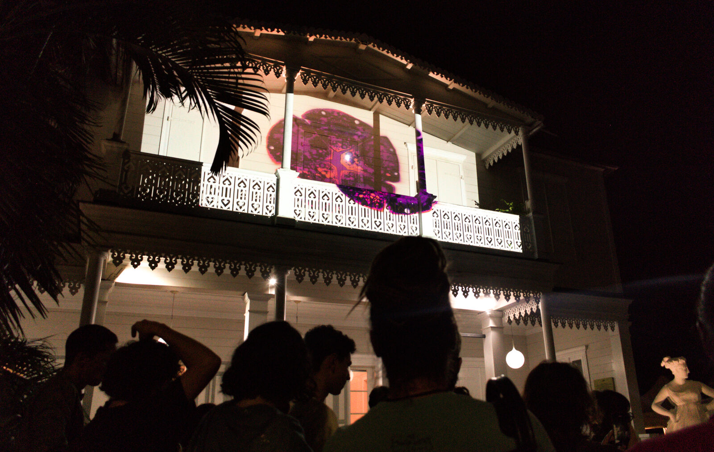
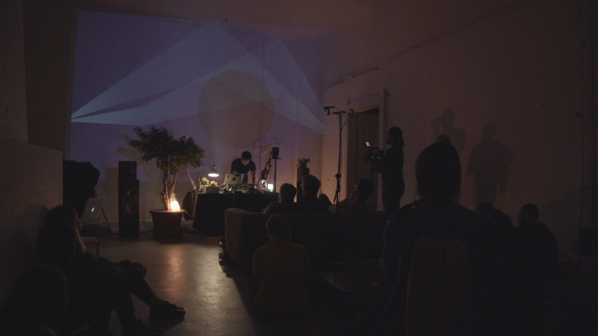
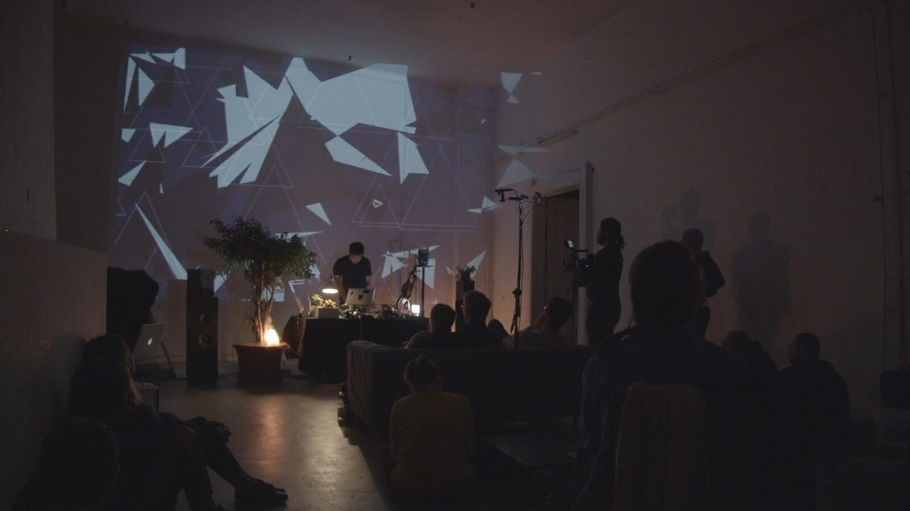
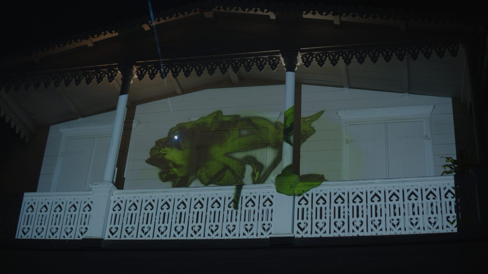
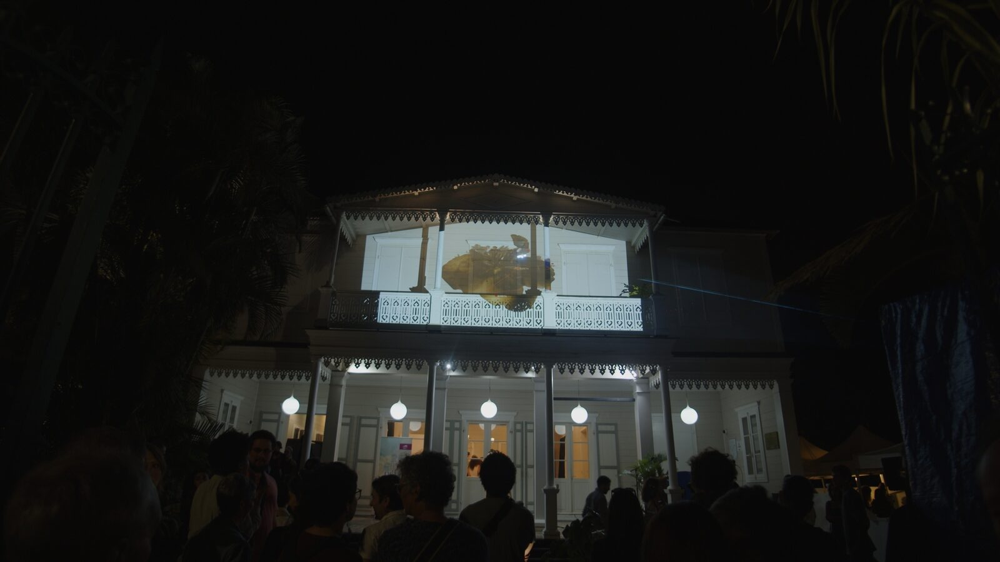
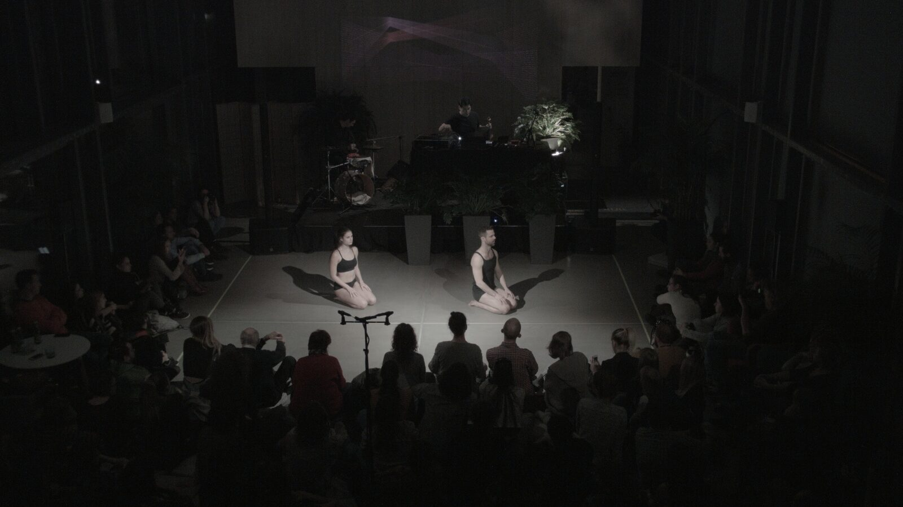
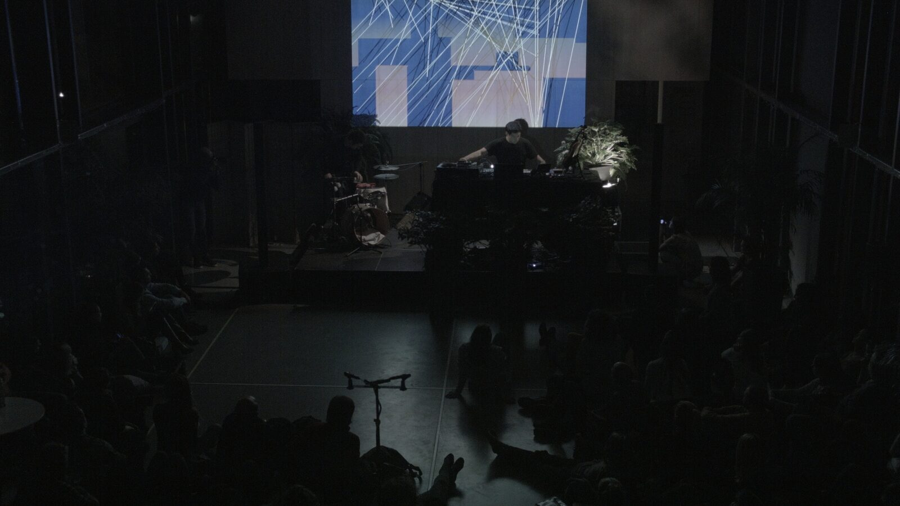
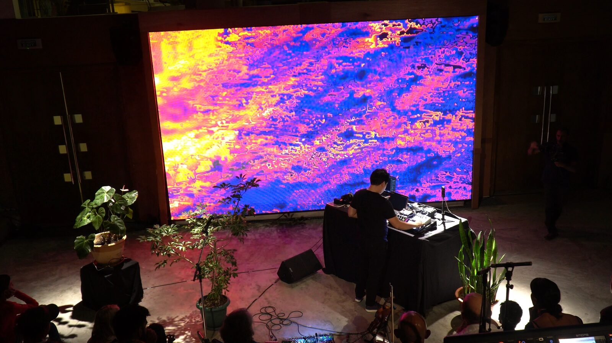
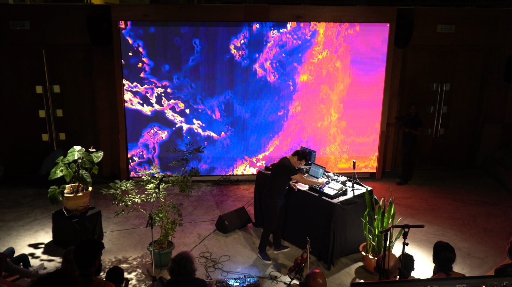
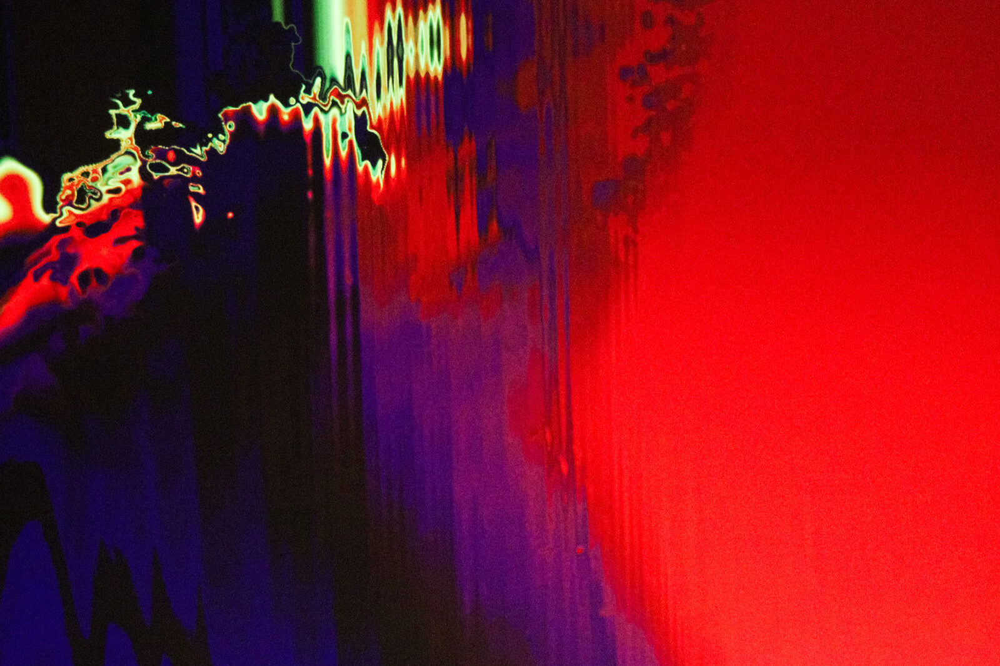
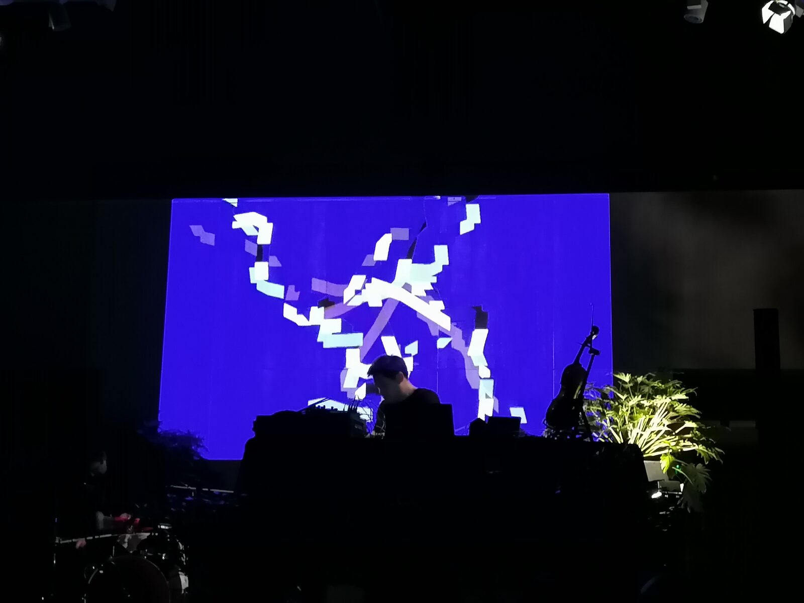
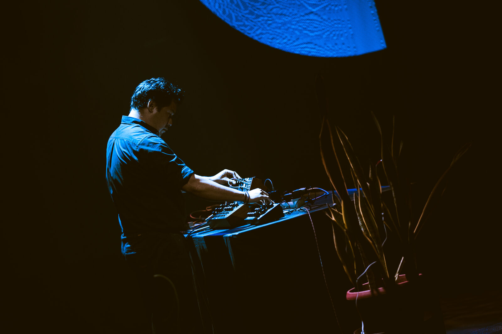
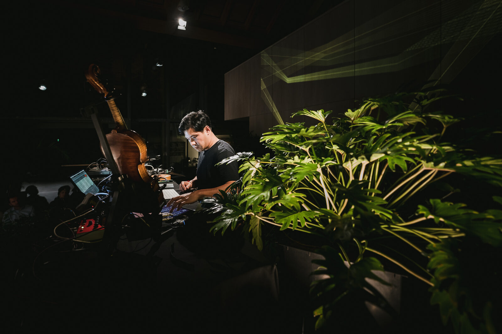
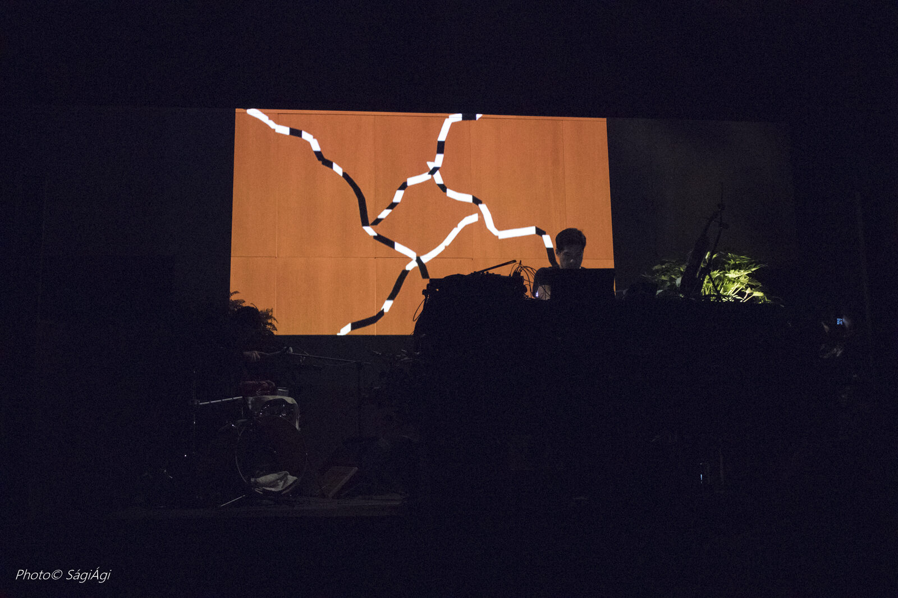
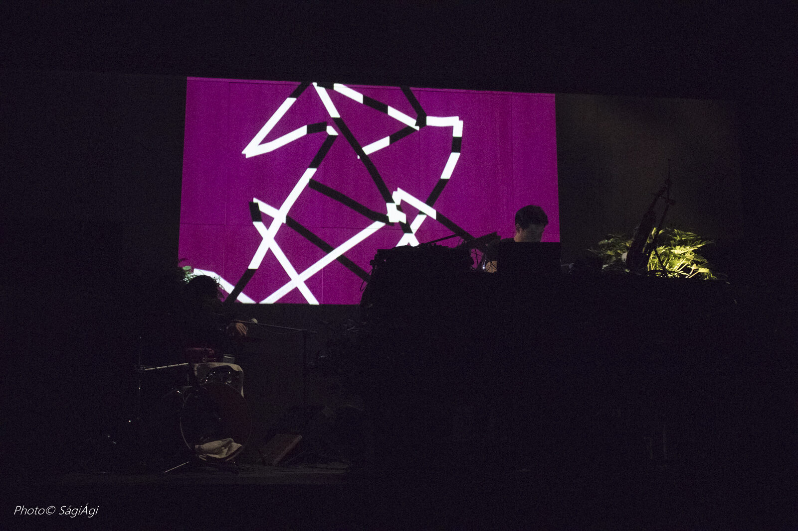
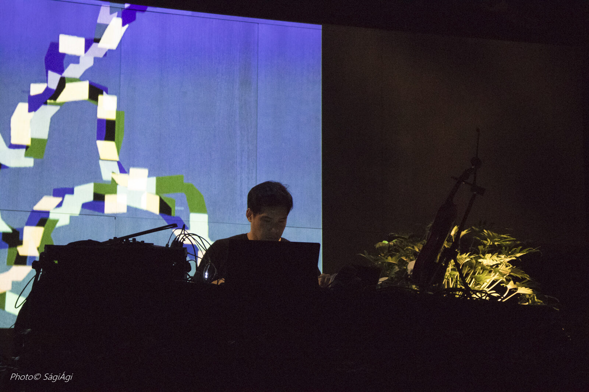
Jérôme Li-Thiao-Té (il/lui) · J3ZZ · Saint-Denis, La Réunion (France) · porteur du projet, seul sur scène ; un·e collaborateur·rice à l'image et regard extérieur (Johann Baron Lanteigne ou un·e autre artiste nouveaux médias du Québec)
Rôle dans le projet : conception, composition, captation bioélectrique, sonification, image générative (avec un·e collaborateur·rice à l'image), interprétation.
Collaboration : Oui, pour l'image. Je porte le projet et l'équipe est complète : je conçois et code moi-même l'image générative, et je suis seul sur scène. J'aimerais engager à mes côtés Johann Baron Lanteigne, ou un·e autre artiste nouveaux médias du Québec, pour développer avec moi les mondes visuels en volume, de la préparation à distance jusqu'aux deux périodes sous le dôme. Son rôle dépasse l'image : étant un·e artiste nouveaux médias, il ou elle portera aussi un regard extérieur sur l'ensemble du spectacle (le rapport entre son, image, plantes et présence de l'interprète), le regard qu'un interprète seul ne peut pas avoir sur sa propre pièce. Ce partage du travail allège aussi ma charge ; sa rémunération figure au budget.
Jérôme Li-Thiao-Té (J3ZZ) est un artiste transdisciplinaire : violoniste de formation, concepteur sonore et créateur d'image générative. Sa pratique s'ancre dans la performance audiovisuelle interactive en direct plutôt que dans l'installation seule, sa présence de musicien sur scène reste un élément actif du dispositif, pas un habillage. Il conçoit, code et produit lui-même ses pièces, faisant dialoguer captation de signaux bioélectriques, sonification en temps réel, spatialisation ambisonique et image générative — compétences acquises pour l'essentiel en autodidacte, complétées par des formations ciblées (TouchDesigner, informatique musicale).
Ce parcours de violoniste débute dès l'enfance et le porte sur scène à travers l'Europe pendant une décennie (improvisation, composition pour la danse contemporaine, spatialisation audio live avec les arts du cirque) avant de développer, depuis 2019, Racines & Résonances : une performance audiovisuelle immersive à partir de capteurs bioélectriques posés sur le végétal, transformés en temps réel en son et en image générative. Présentée en Hongrie, à La Réunion, à Maurice et en France.
En parallèle, une formation d'ingénieur en informatique et une expérience de direction dans des structures culturelles (La Réunion, Europe) nourrissent sa capacité à porter ses projets de bout en bout, de la conception à la diffusion.
Je suis d'origine chinoise hakka, de La Réunion. Cette identité, au croisement des cultures présentes sur l'île, traverse directement le projet : les prières de la dernière pièce font écho à la composante chinoise de La Réunion, aux côtés du maloya et des percussions d'inspiration indienne. Je vis et travaille sur une île de l'océan Indien, loin des principaux lieux de création immersive : chaque projet à l'international suppose des déplacements longs et coûteux.